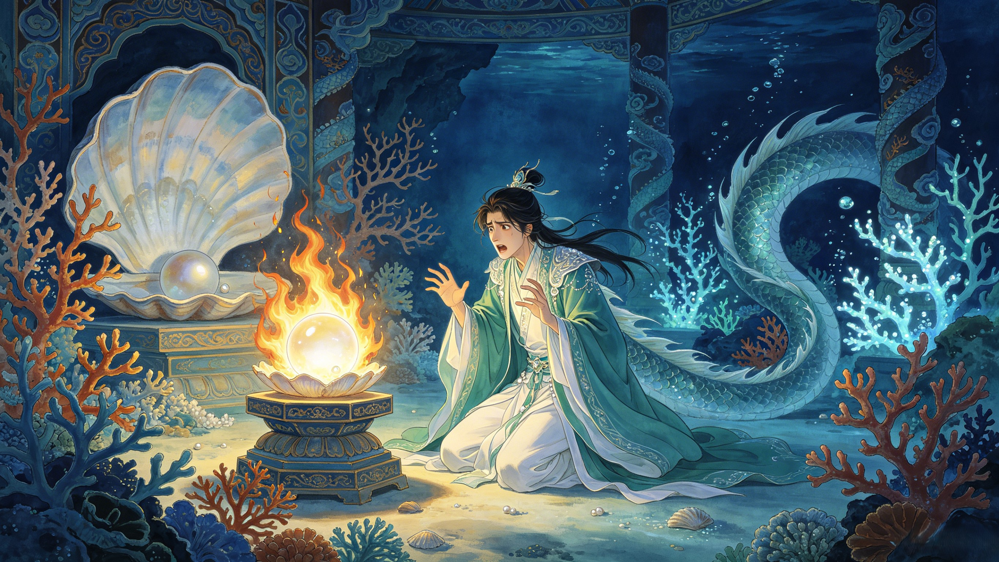

The Fall
He was Ao Lie, third prince of the Dragon King of the Western Sea. Born to coral palaces and imperial favor. Destined for the celestial court. Until one night, a single flame changed everything — and a dragon prince found himself on the execution ground.
Beneath the waves of the Western Sea lay one of the four great Dragon Palaces of the world — home to Ao Run, Dragon King of the West, and his royal family. Among his many children was his third son: Ao Lie. As a dragon prince, Ao Lie wanted for nothing. He swam through halls of coral and abalone, wore robes woven from sea silk, and carried the bloodline of the most ancient and powerful creatures in the Chinese cosmos.
The Dragon Kings — Ao Guang (East), Ao Qin (South), Ao Run (West), and Ao Shun (North) — answered directly to the Jade Emperor himself. They commanded the rains, the tides, and every creature that breathed water. Their sons and daughters served in the celestial bureaucracy, attending court in heaven and governing the waters of the mortal realm. Ao Lie was being groomed for exactly such a life — a life of cosmic duty and eternal privilege.
Key fact: The four Dragon Kings rule the oceans of the four cardinal directions. Together with the Dragon King of the Eastern Sea, Ao Run governed one-quarter of the world's waters — an authority second only to the Jade Emperor's celestial court.
Within the Dragon Palace, each royal child received an imperial pearl — a luminous orb that symbolized their dragon bloodline and connection to the celestial order. These pearls were not mere jewelry. They were treasures bestowed by heaven itself, glowing with inner light, representing the legitimacy and divine favor of the Dragon King's house. To damage one was to insult the celestial court. To destroy one was to commit a crime punishable by death.
What exactly happened that night remains one of the great enigmas of Journey to the West. The text is terse — almost deliberately vague. Some versions say Ao Lie was careless with a candle. Others say he was practicing fire magic, or that he was drunk, or that a flash of anger made him careless. What is certain: the pearl caught fire, and the fire could not be extinguished. The imperial pearl burned until nothing remained but ash.
In the celestial hierarchy, certain offenses carry absolute penalties. Burning an imperial pearl was one of them. Ao Lie's father, the Dragon King of the Western Sea, had no choice but to report the crime. The Jade Emperor's law was explicit and unbending: whoever destroys a celestial treasure forfeits their life. Ao Run — a father forced to condemn his own son — brought the matter before the heavenly court.
The judgment was swift. Ao Lie was stripped of his rank, his title, his name. He was bound and taken to the Dragon-Slaying Platform — the execution ground where dragon criminals were beheaded. The sentence: death by decapitation, the standard punishment for capital offenses against heaven.
As the executioner's blade rose, a figure appeared on the road to the Western Paradise. Guanyin, the Bodhisattva of Compassion, was traveling east to find a scripture pilgrim — a mortal monk worthy of carrying the Buddha's sutras from India to China. She passed by the execution ground and saw the young dragon prince, bound and weeping, his life moments from ending.
Guanyin could hear the cries of the world. She could hear the dragon's remorse, his terror, his desperate wish for another chance. And she saw something else: purpose. The universe needed a being of dragon blood who would serve — not as a prince, not as a warrior, but as a bearer of burdens. Someone who would carry a mortal monk across 108,000 li of demon-infested wilderness without complaint, without pride, without a single word.
Guanyin petitioned the Jade Emperor for mercy. Her argument was simple but unassailable: the dragon's death served no cosmic purpose. But his life — transformed, humbled, given to service — could serve the greatest purpose in the universe: the retrieval of the Buddha's scriptures. The Jade Emperor, who had sentenced countless beings across eternity, commuted the sentence. Ao Lie would not die. But neither would he go free.
The commutation: Ao Lie's death sentence was lifted on one condition — he would transform into a white horse and carry the scripture pilgrim, Tang Sanzang, for the entire duration of the journey west. Fourteen years. 108,000 li. In silence. Without complaint. A dragon prince reduced to a beast of burden — by heaven's mercy.
Guanyin did not take Ao Lie with her. She instructed him to wait at the Serpent Coil Mountain — a desolate, rocky peak in the middle of nowhere. There, in the cold streams of Eagle Grief Stream, the dragon prince would remain until a monk came seeking a mount. He was to eat the monk's original horse — a necessary ruse — and then offer himself as its replacement.
For an unknown period, Ao Lie waited. A dragon prince. Alone. In a cold mountain stream. His only company: the knowledge that somewhere, a monk was walking toward him, unaware that his mount would one day be eaten by the very creature destined to carry him.
When Tang Sanzang and his first disciple Sun Wukong reached Serpent Coil Mountain, they stopped to rest by Eagle Grief Stream. Ao Lie — in his dragon form — surged from the water, devoured Tang Sanzang's original white horse in a single gulp, and vanished back into the depths.
Sun Wukong attacked. The battle was fierce but brief — Ao Lie, weakened by his transformation and unsure of his purpose, fled rather than fight. It took Guanyin's direct intervention to explain the situation: the dragon was no demon. He was the monk's new mount. With a pass of her hand, she touched Ao Lie's dragon body. Scales softened into a coat of white. Claws became hooves. The majestic dragon of the Western Sea shrank and reshaped into a pure white horse — identical to the one he had just eaten. His mane shimmered like sea foam under moonlight. His eyes, still a dragon's eyes, held the depth of the ocean he had left behind.
Tang Sanzang climbed onto his new mount's back. Ao Lie — now the White Dragon Horse — did not speak. He would not speak for fourteen years.
Ao Lie transformed: the dragon prince in equine form
The White Dragon Horse's origin story is unique among the pilgrims. Zhu Bajie was banished for lust. Sha Wujing was banished for carelessness. Sun Wukong was punished for rebellion. But Ao Lie's crime was an accident — a moment of misfortune that cost him everything. Of all the pilgrims, his fall was arguably the least deserved. And his penance was arguably the harshest: to serve not as a warrior or a sage, but as a means of transport. To be ridden. To be silent. To give up not just his freedom, but his very form.
And yet — or perhaps because of this — his redemption is among the most moving in the entire epic. The dragon who fell the farthest, who asked for nothing, who served in silence, would rise higher than almost any of them in the end.
Ao Lie was the third prince of Ao Run, Dragon King of the Western Sea. He lived in the Dragon Palace beneath the Western Ocean, a royal dragon of the ancient Long (龍) bloodline that governed the world's waters under the Jade Emperor's authority. He was being groomed for a position in the celestial bureaucracy.
He burned his father's imperial pearl — a celestial treasure bestowed by heaven that symbolized the Dragon King's divine legitimacy. The exact circumstances are ambiguous in Journey to the West: some versions suggest it was an accident with a candle, others imply carelessness or a moment of anger. Regardless, the penalty under celestial law was death by beheading.
Guanyin saw that the young dragon's death served no purpose in the cosmic order. She recognized that his dragon bloodline and his capacity for silent endurance made him the perfect mount for Tang Sanzang's pilgrimage — a being who could carry a mortal monk through demon-filled wilderness without complaint. Her compassion found utility in what appeared to be a hopeless situation.
The Dragon-Slaying Platform (斬龍台) is the celestial execution ground where dragon criminals are beheaded. Even beings of immense power and ancient lineage cannot escape the Jade Emperor's justice — the platform exists to remind all immortals that even dragons are subject to heaven's law.
The text of Journey to the West does not specify the exact duration, but it was long enough that Ao Lie had become a local legend — a "dragon demon" haunting Eagle Grief Stream. He waited alone, knowing only that a monk would eventually arrive.
Dive Deeper